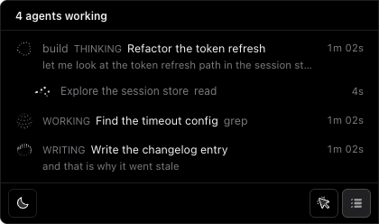
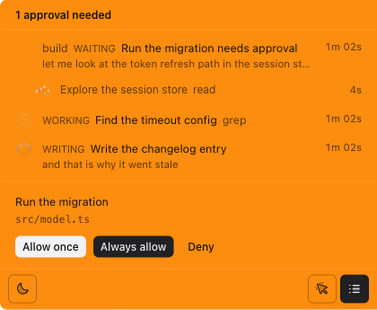
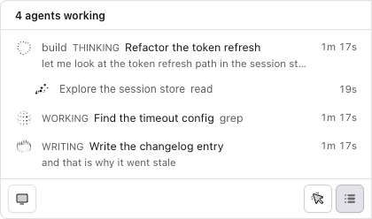
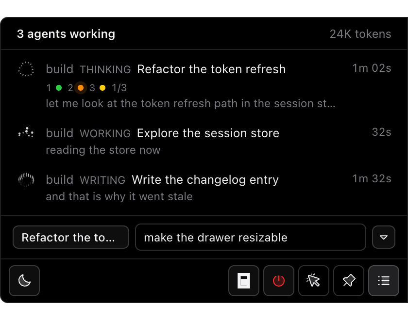

What it is doing
A live session carries an orb that names its activity: thinking, writing, searching, running code. A shell command and a web search stop looking the same.
A Dynamic Island for OpenCode, on macOS and Windows. It floats on the right edge of your screen and tells you what every session and agent on your machine is doing — and answers the permission prompts you would otherwise have to go and find.
A live session carries an orb that names its activity: thinking, writing, searching, running code. A shell command and a web search stop looking the same.
Only the sessions running right now are listed, with the subagents indented under the session that spawned them. Idle ones stay out of the way.

When an agent asks for permission the island turns orange, opens itself and waits. You answer without leaving the window you are working in.

Light, dark or system. It can also take clicks away entirely, so it never gets in the way of what you are doing.

The drawer has a composer at its foot. Type a prompt and press Enter, and the agent picks it up where it is. The session you talk to is picked from the tabs you have open in OpenCode, so a session that has ended can be picked up again.

First, install it.
opencode plugin add opencode-islandIt appears on the right edge of your screen and stays out of the way until something happens.
Then run your agent as usual.
opencodeEvery session shows up on the edge, with the words the agent is saying and an orb for what it is doing right now.
It needs macOS 13 or newer, or Windows 10, and OpenCode 2.2.7 or newer. One command, then it floats on the edge of your screen.